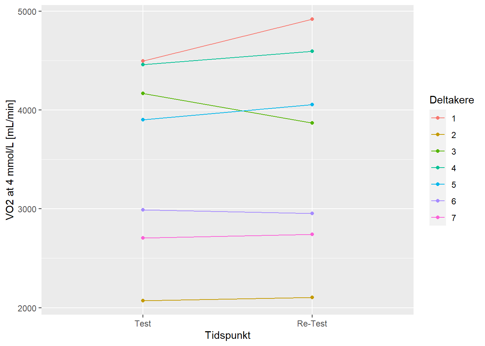
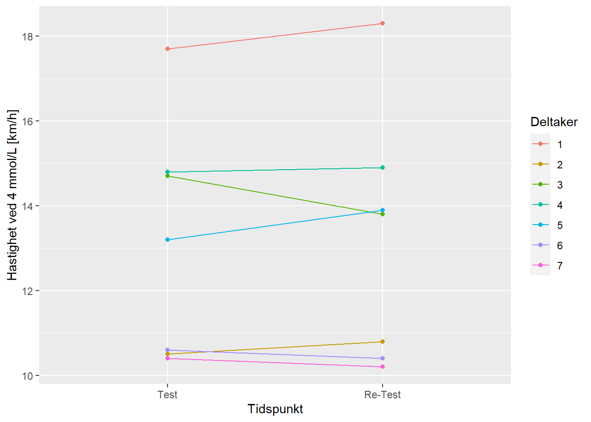

| Timepoint | Mean VO2 [mL/min] |
SD VO2 [mL/min] |
Mean Speed [km/h] |
SD Speed [km/h] |
|---|---|---|---|---|
| Re-Test | 3,604.57 | 1,032.15 | 13.19 | 2.95 |
| Test | 3,541.29 | 952.28 | 13.13 | 2.80 |
Assignment 1: Reliability and tools for reproducible data science
Introduksjon
Laktatterskelen kan være et viktig parameter for å bestemme utholdenhetsprestasjonen. En utfordring er reliabiliteten av testene som blir gjennomført for å få laktatverdier og hvor valide disse bestemmer utholdenhetsprestasjonen (Faude, Kindermann, and Meyer 2009). Det er vanlig å gjennomføre en laktatprofiltest med trinnvis økende belastning hvor man vanligvis observerer en økning i laktatkonsentrasjonen ved økende belastning. Det gjelder å tolke det resulterende laktatprofil med hensyn til utholdenhetsevne. Det er generelt akseptert å tolke en høyreforskyvning (lavere laktatkonsentrasjon ved gitt belastning) av laktatkurven som forbedret utholdenhetskapasitet (Faude, Kindermann, and Meyer 2009). Det er viktig å huske på at en laktatprofiltest kan gjennomføres på forskjellige måter og at f.eks. belastningstiden (drag) eller intensiteten kan variere. Stedet man tar blodet fra (øreflippen, fingertuppen) kan også ha en effekt på resultatet, prøvene tatt fra øreflippen har vist seg å ha lavere laktatkonsentrasjon enn prøvene fra fingertuppen (Faude, Kindermann, and Meyer 2009). Laktatterskelen på 4 mmol/L ble etablert av flere forskere, fordi det så ut til å være den høyeste laktatkonsentrasjonen som var bærekraftig over en lengre tid med belastning. Det har vist seg at det finnes forskjeller fra individ til individ og at en fast terskel på 4 mmol/L kan under- og overestimere utholdenhetskapasiteten til den enkelte (Faude, Kindermann, and Meyer 2009).
I denne undersøkelsen gjennomførte vi laktatterskeltester for å se på hastigheten og VO2-verdiene på 4mmol/L.
Metode
Deltakerne i denne studien var friske idrettsstudenter (n = 7). Alle gjennomførte to laktatterskeltester med trinnvis økende belastning på forskjellige dager, bortsett fra en person, som gjennomførte begge testene (test og re-test) på samme dag. Laktat, RER, HF, VE og VO2 ble målt.
Før testpersonene kom gjorde testlederen og testassistenten alt klar for gjennomføringen av testen og kalibrerte utstyret. Når deltakerne ankommet testlokalet ble de informert om fremgangsmåten og data som kjønn, alder, høyde ble innhentet. I forkant av testen målte alle deltakerne kroppsvekten (uten sko, 300g ble trukket av) som ble lagt inn i testprogrammet. Deltakerne ble også informert om BORG skalaen, som ble brukt underveis i testen.
Testen ble gjennomført på tredemøllen (Katana Sport, Lode) med en stigningsprosent av 1%. Det var ingen oppvarming og deltakerne startet rett med første draget og en starthastighet på 8.5 km/t. Hvert drag varte i 5 minutter og hastigheten økte med 1.5 km/t på hvert drag. Deltakeren skulle ta i munnstykke etter 1:30 minutter og ut etter 4:30 minutter. Etter 5 minutter hoppet deltakeren av møllen og laktatmåling ble tatt fra fingertuppen. Det ble også spurt om hvor personen var på BORG skala. Pausen mellom dragene var 1 minutt, hastigheten ble skrudd opp i pausen. Testen avsluttet ved en laktatmåling på over 4 mmol/L. Deltakerene fikk informasjon 15 sekunder før de skulle ta på og av masken, når de skulle hoppe på og av løpemøllen. Underveis i testen ble også VO2, RER, HF og VE plottet inn rett i et plott skjema i Excel. Disse verdiene ble notert hvert 30 sekund fra 2:30-4:30 i hver belastningsdrag.
VO2 ble målt ved hjelp av en metabolsk analysator med Vyntus CPX miksekammer. Før hver test ble analysatoren gass- og volumkalibrert og gjorde målinger hvert 30 sekund. Laktat ble analysert etter hver drag (BIOSEN C-Line Glucose and Lactate analyzer). Informasjonen som ble gitt til deltakerne under testen var minimal for å sikre lik gjennomføring hos alle.
Databearbeiding
I vår rapport har vi tatt med VO2- og laktatverdiene, med hjelp av dataene kunne vi regne ut hvilken hastighet og VO2 testpersonen hadde på 4 mmol laktat. På dataen fra O2 analysatoren regnet vi ut en verdi fra hver belastning ved å regne gjennomsnittet av de to høyeste målingene. O2 og laktat på 4 mmol/L ble regnet ut i Excel og bearbeidet videre i RStudio. Vi har gjort en utregning av standardavvik (SD), gjennomsnitt (mean) av test og re-test, typical error (te) og coefficient of variation (cv).
Resultater
Tabell 1 viser en økning av den gjennomsnittelige hastigheten ved 4 mmol/L fra test til re-test. Gjennomsnittelig VO2 økte også.
VO2 ved 4mmol/L
Gjennomsnittelig VO2 ved 4mmol/L er 3572,9 ml/min (± 217,1), standardfeilen (typical error) uttrykt som variasjonskoeffisient (coefficient of variation) ligger på 4.3%.

Hastighet ved 4mmol/L
Gjennomsnittelig hastighet ved 4 mmol/L er 13,2 (± 0,55), standardfeilen uttrykt som variasjonskoeffisient ligger på 2.9%.

Reliabilitet og diskusjon
Reliabiliteten i forskning er veldig viktig for å kunne reprodusere tester og målinger. En test som er reliabel skal produsere de samme resultatene hver gang man gjentar den under samme forholdene (Hopkins 2000). Det er forskjellige faktorer som gjør at en test er reliabel. I vår undersøkelse var det få forsøkspersoner (n = 7), det hadde vært bedre for reliabiliteten hvis vi hadde hatt flere. God standardisering av testen er en viktig faktor også. For å standardisere hele gjennomføringen av testen prøvde vi å gjøre alt likt fra gang til gang. Informasjonen vi ga til deltakerne under testen var minimal for å sikre lik gjennomføring hos alle. Testprotokollen ble gjennomført likt hver gang, men en mulig feilkilde er at det var ulik testleder på test og re-test. Testledere og assistenter har lite erfaring og kan ha påvirket laktatmålinger. Det var også veldig ulik erfaring hos testpersonene. En del hadde gjort en laktatterskeltest før og for andre var det første gangen de løp på en mølle.
Standardfeilen er en måte å angi feilmarginen av en måling. Når man ønsker å måle f.eks. forbedringen av utholdenhetsprestasjonen på en gruppe individer er det viktig kunne differensiere mellom hva som er endring og hva som er målefeil. Standardfeilen blir ofte utregnet som variasjonskoeffisient (prosent av gjennomsnittet). Grunnen til at man bruker variasjonskoeffisienten er at sammenligningen blir mer nøyaktig ettersom standardfeilen vanligvis øker når målingsverdiene blir større, mens prosentverdiene er ganske like (Hopkins 2000). Jo større variasjonskoeffisienten er, jo større er spredningen. For å forbedre reliabiliteten og senke variasjonskoeffisienten kan man blant annet ha samme testleder på begge tester, standardisere de siste 48 timene for testdeltakerne før test, ha mer rutine i labbarbeid og flere forsøkspersoner (Hopkins 2000). Andre faktorer som kan føre til endringer fra test til re-test kan være læringseffekten, motivasjon eller utmattelsesgraden.
Referanser
Faude, Oliver, Wilfried Kindermann, and Tim Meyer. 2009. “Lactate threshold concepts: how valid are they?” Sports Medicine (Auckland, N.Z.) 39 (6): 469–90. https://doi.org/10.2165/00007256-200939060-00003.
Hopkins, Will G. 2000. “Measures of Reliability in Sports Medicine and Science.” Sports Med, 15.